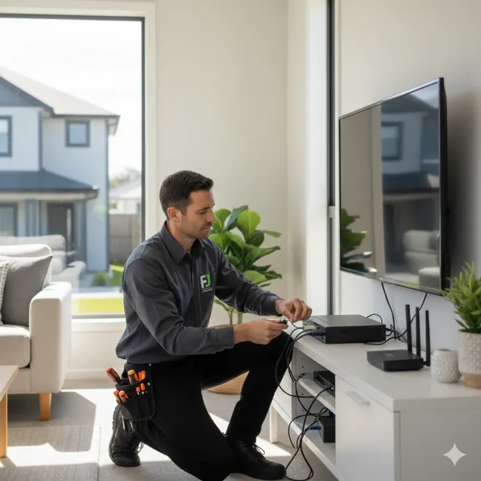

Alarm Systems & Repairs Logan
Local detail on Logan properties and typical alarm jobs.
View alarms in LoganWired, wireless and hybrid alarm systems tailored to the property, for homes and businesses across South East Queensland.

An alarm job starts with walking the entry points: doors, sliding doors, ground-floor windows, and anywhere else worth protecting, and deciding which need a reed switch, which need a motion sensor, and which need both. From there it's running cable where it's practical, mounting sensors and the keypad, installing the panel, and setting up zones so you know exactly which sensor triggered an alert rather than a single generic alarm.
Once it's wired and tested, we set up the app so you can arm, disarm and check the status remotely, talk through monitoring options if you want them, and run through a couple of test triggers together before we leave, so you know exactly how the system behaves.
Wired sensors are the most reliable long-term option because there's no battery to replace and no radio signal to drop out, but they need wall or roof-space access to run cable: realistic during a build or renovation, harder in a finished home without ceiling access. Wireless sensors stick on with minimal disruption and suit a property where opening up walls isn't an option, at the cost of periodic battery changes and being slightly more sensitive to interference. Most established homes end up with a hybrid setup: wired where the roof space makes it easy, wireless on doors and windows where it doesn't.
The main drivers are the number of doors and windows being covered, whether the job is wired, wireless or hybrid, how accessible the roof space is, the panel and keypad specification, and whether monitoring is included or self-managed through the app.
Have a think about which doors and windows matter most, whether pets will be roaming the house while it's armed (this affects motion sensor placement and sensitivity), who needs the app and a code, and whether you want 24/7 monitoring or prefer to manage alerts yourself.
Motion sensors aimed straight at a window where daylight or passing headlights cause false triggers; door sensors mounted with such a gap that the alarm doesn't register until the door's already wide open; battery-only wireless sensors with no low-battery warning set up, so they quietly stop working; and panels left on default codes because nobody walked the owner through changing them.
Local detail on Logan properties and typical alarm jobs.
View alarms in LoganThe full range of services available across Logan.
View Logan service areaCamera coverage to see exactly what triggered an alert.
Explore CCTV installationManage visitor access at the door or gate.
Explore intercom installationReliable connectivity so app alerts arrive without delay.
Explore WiFi and data cablingWired alarms run a cable to every sensor, which is the most reliable option but suits a build or renovation where walls are open. Wireless sensors communicate over radio, so they suit an established home with no wall access. Hybrid systems mix the two, wired where it's easy and wireless everywhere else, which is what most existing homes end up with.
Yes, most panels support connection to a monitoring service if you want a 24/7 response, or you can run the system self-monitored through the app and decide who to call yourself. We'll talk through both options and what suits the property.
Yes. Commercial alarm jobs typically cover more entry points, often paired with duress buttons at a counter or till, and need to work around trading hours and staff access rather than a single household routine.
In most cases, yes. Alarms, CCTV and intercoms are separate systems, but we plan cabling and placement so they don't conflict, and where a panel supports it, they can share entry-point information.
The property location, whether it's residential or commercial, how many doors and windows you want on the system, and whether you're leaning wired, wireless or open to either. Let us know about any existing panel too.
Tell us about the property and we'll come back with wired, wireless or hybrid options that fit.